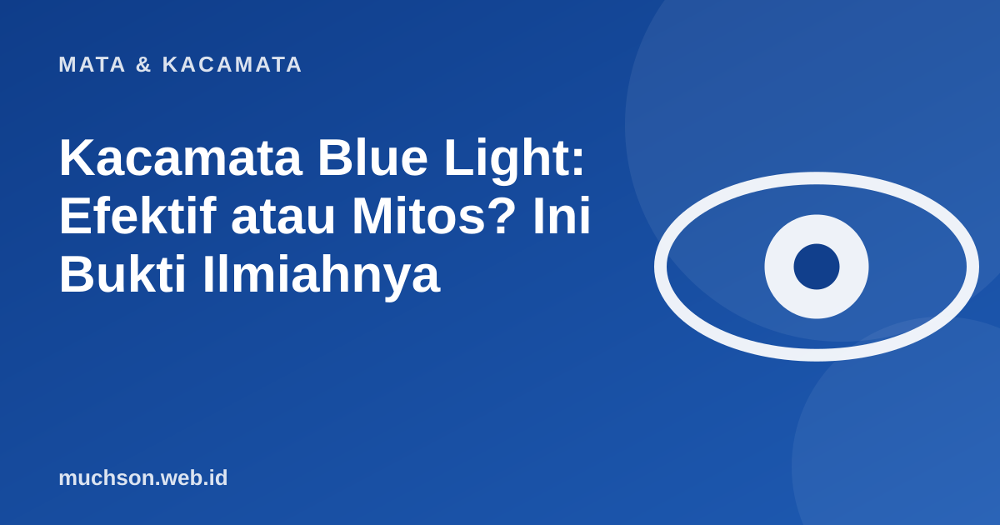

Beranda › Artikel › Mata & Kacamata
Mata & KacamataKacamata Blue Light: Efektif atau Mitos? Ini Bukti Ilmiahnya
Iklan kacamata anti blue light menjanjikan mata tidak lelah setelah seharian menatap layar. Apakah benar? Jawaban jujurnya: bukti ilmiahnya jauh lebih lemah daripada iklannya, tetapi ada kebiasaan sederhana yang terbukti lebih membantu. Artikel ini membahas keduanya, termasuk kapan lensa blue light masih masuk akal dipilih.

Apa itu blue light?
Blue light adalah cahaya biru berenergi tinggi di sekitar panjang gelombang 400 sampai 500 nanometer. Sumber terbesarnya justru matahari. Layar ponsel dan laptop juga memancarkannya, tetapi dalam jumlah jauh lebih kecil dibanding sinar matahari di luar ruangan. Cahaya biru ikut berperan mengatur jam biologis tubuh, itu sebabnya ia sering dikaitkan dengan kualitas tidur.
Apa kata bukti ilmiah?
Tinjauan sistematis Cochrane tahun 2023 (rangkuman dari banyak penelitian) menyimpulkan bahwa lensa penyaring cahaya biru mungkin tidak mengurangi keluhan mata lelah akibat layar dalam jangka pendek dibanding lensa biasa. Soal tidur, hasilnya belum meyakinkan: sebagian studi melaporkan manfaat, sebagian tidak. Artinya, klaim bahwa kacamata blue light "mencegah kerusakan mata" tidak didukung bukti yang kuat.
Sumber kelelahan mata saat menatap layar terutama adalah berkurangnya kedipan (mata jadi kering) dan fokus dekat yang terlalu lama, bukan cahaya biru itu sendiri. Itu sebabnya kebiasaan lebih berpengaruh daripada lensa.
Yang terbukti membantu: aturan 20-20-20
American Academy of Ophthalmology menganjurkan: setiap 20 menit, lihat benda sejauh sekitar 6 meter (20 kaki) selama minimal 20 detik. Tujuannya mengendurkan otot fokus dan memberi kesempatan mata berkedip normal. Coba pewaktu di bawah selama bekerja.
Daftar kebiasaan yang masuk akal
Kalau begitu, siapa yang masih cocok memilih lensa blue light?
- Yang sudah memakai kacamata. Menambahkan lapisan blue light pada lensa resep biasanya selisih harganya kecil, dan sebagian orang merasa lebih nyaman terhadap silau layar.
- Yang sering bekerja malam dan ingin mengurangi cahaya biru. Pengaruhnya pada tidur belum pasti, jadi anggap sebagai tambahan, bukan solusi utama.
- Yang tidak mau mengulang pembelian. Bila resep Anda sudah perlu diperbarui, memilih lensa dengan lapisan ini adalah pertimbangan praktis, bukan kebutuhan medis.
Jangan membeli kacamata blue light karena takut buta atau rusak mata. Alasan itu tidak didukung bukti. Belilah karena kenyamanan, dan tetap lakukan kebiasaan di atas.
Tanda mata perlu diperiksa, bukan sekadar diistirahatkan
- Mata lelah dan sakit kepala yang tidak membaik walau sudah beristirahat.
- Pandangan kabur menetap atau berubah.
- Mata merah, nyeri, atau berair terus-menerus.
- Kilatan cahaya atau bayangan gelap yang tiba-tiba muncul (segera periksa).
Tanya jawab
Apakah kacamata blue light aman untuk anak?
Bisakah kacamata blue light membuat tidur lebih nyenyak?
Apa bedanya lensa blue light dengan lensa biasa?
Perlukah saya memakai kacamata kalau hanya mata lelah tanpa minus?
Referensi
- Cochrane: blue-light filtering spectacle lenses for visual performance, sleep, and macular health (2023)
- American Academy of Ophthalmology: digital eye strain dan aturan 20-20-20